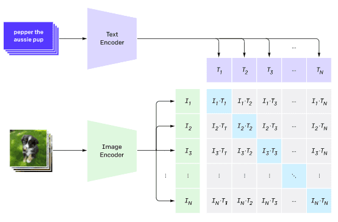

多模态网络
在transformer模型成功解决NLP任务之后，同样或相似的架构被应用于计算机视觉任务。现在越来越多的人对构建能够结合视觉和自然语言能力的模型感兴趣。OpenAI对此做了一些尝试，其中一个被称为CLIP和DALL.E。
对比图像预训练（CLIP）
CLIP的主要思想是能够比较文本提示和图像，并确定图像与提示的对应程度。

图片来自这篇博客文章
该模型在从互联网上获取的图像及其标题上进行训练。对于每个批次，我们获取N对（图像，文本），并将它们转换为一些向量表示I1,..., IN / T1, ..., TN。然后将这些表示匹配在一起。损失函数被定义为最大化对应于一对（例如Ii和Ti）的向量之间的余弦相似度，并最小化所有其他对之间的余弦相似度。这就是这种方法被称为对比的原因。
CLIP模型/库可以从OpenAI GitHub获取。该方法在这篇博客文章中有所描述，并在这篇论文中有更详细的描述。
一旦这个模型被预训练完成，我们可以给它一个图像批次和一个文本提示批次，它将返回一个包含概率的张量。CLIP可用于多个任务：
图像分类
假设我们需要在猫、狗和人类之间对图像进行分类。在这种情况下，我们可以给模型一个图像，和一系列的文本提示：“一张猫的照片”，“一张狗的照片”，“一张人的照片”。在结果的3个概率向量中，我们只需选择数值最高的索引。

图片来自这篇博客文章
基于文本的图像搜索
我们也可以做相反的操作。如果我们有一个图像集合，我们可以将这个集合传递给模型，再加上一个文本提示——这将给我们与所给提示最相似的图像。
✍️ 示例： 使用CLIP进行图像分类和图像搜索
打开Clip.ipynb笔记本，看看CLIP的实际应用。
使用VQGAN + CLIP进行图像生成
CLIP还可以用于从文本提示生成图像。为此，我们需要一个生成器模型，它能够根据一些向量输入生成图像。这样的模型之一称为VQGAN（矢量量化GAN）。
VQGAN区别于普通GAG的主要思想如下： * 使用自回归transformer架构生成组成图像的情境丰富的视觉序列。这些视觉部分由CNN学习。 * 使用子图像判别器检测图像部分是“真实”还是“伪造”的（与传统GAN的“全或不全”方法不同）。
通过访问Taming Transformers网站了解更多关于VQGAN的信息。
VQGAN与传统GAN的一个重要区别是，后者可以从任何输入向量生成一张不错的图像，而VQGAN则可能生成不连贯的图像。因此，我们需要进一步指导图像创建过程，这可以通过CLIP来完成。

为了生成与文本提示相对应的图像，我们首先从一些随机编码向量开始，经过VQGAN生成图像。然后使用CLIP产生一个损失函数，显示图像与文本提示的对应程度。然后的目标是通过反向传播调整输入向量参数，以最小化该损失。
一个实现VQGAN+CLIP的极佳库是Pixray
 |
 |
 |
|---|---|---|
| 根据提示一张年轻男老师手持书本的近距离水彩肖像生成的图片 | 根据提示一张年轻女计算机科学老师手旁电脑的近距离油画肖像生成的图片 | 根据提示一张老年男数学老师站在黑板前的近距离油画肖像生成的图片 |
图片来自Dmitry Soshnikov的人工教师系列
DALL-E
DALL-E 1
DALL-E是一个版本的GPT-3，用于从提示中生成图像。它经过了具有120亿参数的训练。
不同于CLIP，DALL-E同时接收文本和图像作为单一的令牌流。因此，在多个提示中，你可以根据文本生成图像。
DALL-E 2
DALL.E 1和2之间的主要区别是，DALL-E 2生成的图像和艺术作品更加逼真。
使用DALL-E生成的图像示例：
 |
|  |
|  ----|----|----
根据提示一张年轻男文学老师手持书本的近距离水彩肖像生成的图片 | 根据提示一张年轻女计算机科学老师手旁电脑的近距离油画肖像生成的图片 | 根据提示一张老年男数学老师站在黑板前的近距离油画肖像生成的图片
----|----|----
根据提示一张年轻男文学老师手持书本的近距离水彩肖像生成的图片 | 根据提示一张年轻女计算机科学老师手旁电脑的近距离油画肖像生成的图片 | 根据提示一张老年男数学老师站在黑板前的近距离油画肖像生成的图片
参考文献
- VQGAN论文：用于高分辨率图像合成的驯化transformer
- CLIP论文：从自然语言监督中学习可转移的视觉模型